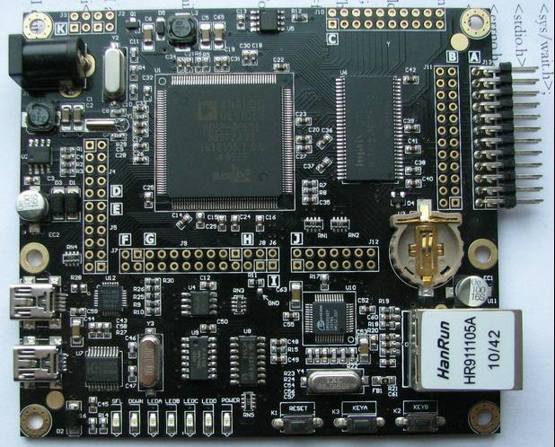
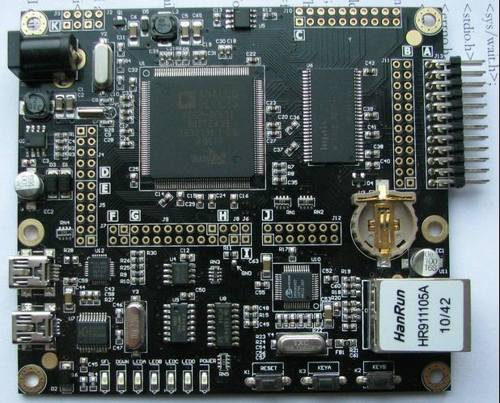

Introduction
A Digital Signal Processor (DSP) is a specialized microprocessor (or a SIP block), with its architecture optimized for the operational needs of digital signal processing.
The goal of DSP is usually to measure, filter or compress continuous real-world analog signals. Most general-purpose microprocessors can also execute digital signal processing algorithms successfully, but dedicated DSPs usually have better power efficiency thus they are more suitable in portable devices such as mobile phones because of power consumption constraints.

The goal of DSP is usually to measure, filter or compress continuous real-world analog signals. Most general-purpose microprocessors can also execute digital signal processing algorithms successfully, but dedicated DSPs usually have better power efficiency thus they are more suitable in portable devices such as mobile phones because of power consumption constraints.

(Clicking on the image you can see a Guide for begginers)
For more information you can registrer on our web: